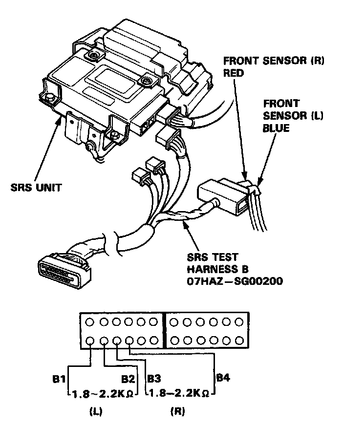
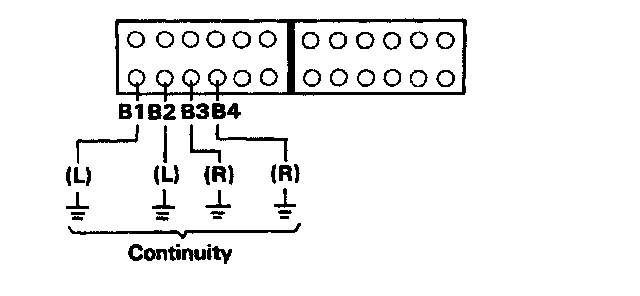

Failure Mode B
Mode B: Both cowl sensors open or a short in one or both front sensors.
CAUTION: Disconnect both the negative and positive battery cables. Connect the short connector to the airbag assembly - refer to "Indicator Light Troubleshooting", caution notice.
1. Connect the SRS test harness B to the front sensor connectors; check the resistance between left front sensor terminals B1 and B2, and between right front sensor terminals B3 and B4.

SRS Test Harness B
- If resistance is more than 1.6K - 2.2K ohms for either sensor, go to step 2.
- If resistance is less than 1.8K - 2.2K ohms, the respective front sensor is faulty; replace the front sensor and recheck the voltages according to the chart in the "Indicator Stays On Continuously" procedure.
2. Check to make sure there is no continuity between body ground and each terminal of both front sensors.

SRS Test Harness B Connector View
- If there is no continuity, the SRS unit is faulty, substitute a known good SRS unit and recheck the voltages according to the chart in the "Indicator Stays On Continuously" procedure.
- If there is continuity, at any of the terminals. that front sensor is faulty; replace sensor and recheck the voltages according to the chart in the "Indicator Stays On Continuously" procedure.